01Bunny
Pip
The welcoming anchor
Long charcoal-tipped ears, ivory coat, mint scarf.
Main pet and unassigned events
Existing 3D species base · look refinement neededFamiliar faces for the work in progress. A character world for Sidefolk: soft 3D, ink-drawn geeks, pocket anime, and a quiet Studio Collection for work.
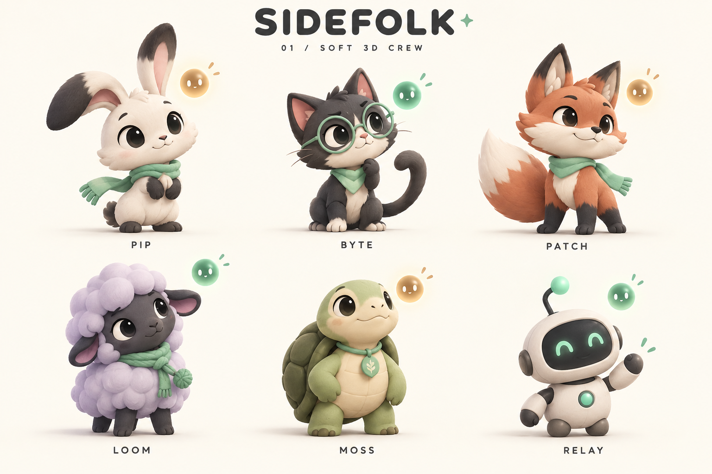
Recommended: Pip, Byte and Patch in Soft 3D, with the user-selected Pip Signal bunny logo. Add the restrained Studio Collection for work. Keep character identity consistent as new styles arrive. These are art and product proposals; existing bunny, cat and fox models are the starting point.
Three directions with shared silhouettes, a mint thread and the same clear status language.
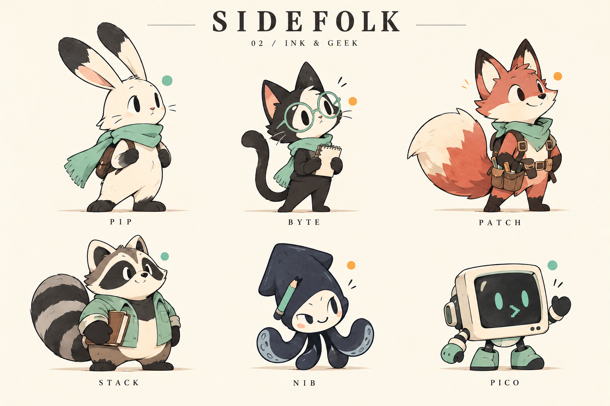
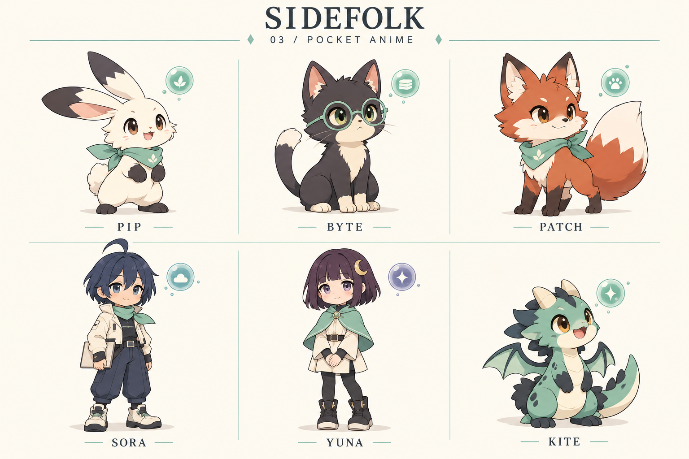
Six restrained characters, each in 2D and 3D. Calm gestures, simple eyes, quiet materials and a minimal option.
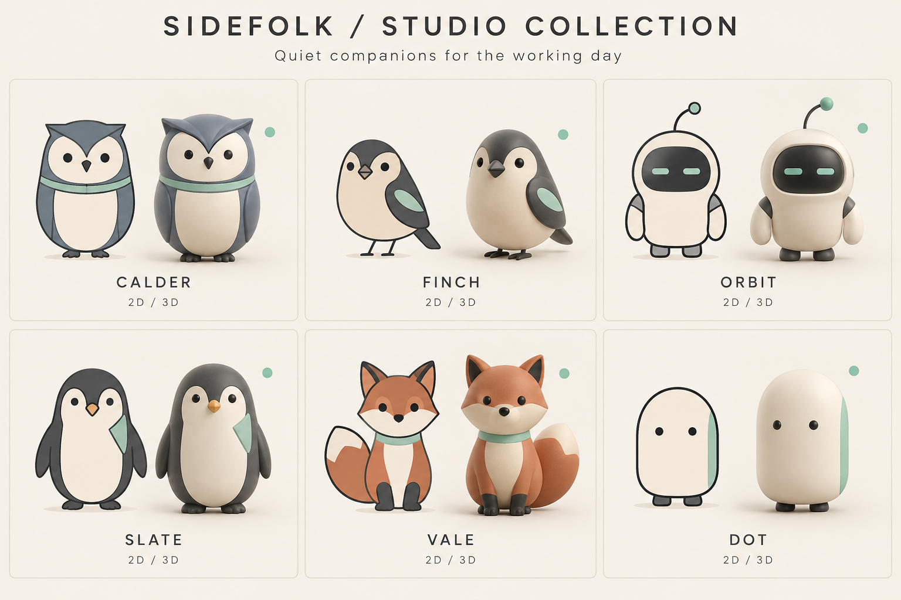
Personality suggests a pairing. Every pet can represent any project or agent.
Showing 18 characters
The welcoming anchor
Long charcoal-tipped ears, ivory coat, mint scarf.
Main pet and unassigned events
Existing 3D species base · look refinement neededThe thoughtful investigator
Round mint glasses, cream muzzle, hooked tail.
Code and research
Existing 3D species base · look refinement neededThe steady builder
Terracotta coat, broad white-tipped tail, mint scarf.
Fixes and shipping
Existing 3D species base · look refinement neededThe patient organizer
Lavender cloud silhouette and chunky scarf knot.
Planning and documentation
Future character · new art/runtime workThe grounded caretaker
Sage shell, ivory face, small neck tag.
Long tasks and infrastructure
Future character · new art/runtime workThe direct communicator
Rounded faceplate, mint eyes, bent antenna.
Integrations and handoffs
Future character · new art/runtime workThe careful archivist
Eye mask, striped tail, mint overshirt.
Repositories and knowledge
Future character · new art/runtime workThe playful designer
Indigo cap, four rounded tentacles, mint pencil.
Design and creative work
Future character · new art/runtime workThe friendly tinkerer
Wide ivory screen housing and stubby feet.
Tools and experiments
Future character · new art/runtime workThe pocket navigator
Navy bob, cream jacket, mint scarf.
Product and coordination
Future character · new art/runtime workThe quiet researcher
Plum bob, crescent clip, short mint cape.
Writing and deep work
Future character · new art/runtime workThe curious explorer
Mint coat, rounded horns, folded wings.
Prototypes and experiments
Future character · new art/runtime workThe composed analyst
Slate brow, cream belly, thin mint collar.
Research and planning
New Studio concept · art and animation work neededThe quiet communicator
Sand coat, charcoal wing, mint wing tab.
Writing and notes
New Studio concept · art and animation work neededThe precise operator
Ivory shell, mint horizontal eyes, arc antenna.
Integrations and operations
New Studio concept · art and animation work neededThe steady work companion
Charcoal coat, ivory belly, mint lapel patch.
Main work companion
New Studio concept · art and animation work neededThe restrained maker
Terracotta coat, curled tail, mint neck band.
Product and delivery
New Studio concept · art and animation work neededThe minimal presence
Ivory capsule, small dot eyes, mint side stripe.
Any project
New Studio concept · art and animation work neededOne main companion, three possible project companions. Idle pets rest in the den.
Pip leads
Byte · code
Patch · web
Loom · docs
Warm, coherent Soft 3D.
Byte leads
Pico · tools
Relay · integrations
Moss · infrastructure
Quiet companions for deep work.
Pip leads
Stack · knowledge
Nib · design
Pico · experiments
Expressive shapes, tactile charm.
Sora leads
Yuna · research
Kite · prototypes
Pip · inbox
A gentle original adventure.
Moss leads
Loom · planning
Pip · main project
Byte · research
Stillness first, clear signals.
Pip in 3D leads
Byte · Ink
Patch · Anime
Relay · 3D
Your taste, one consistent interface.
Slate leads
Finch · notes
Calder · research
Orbit · tools
Composed and clear.
Vale leads
Finch · writing
Calder · discovery
Slate · delivery
A quiet creative workplace.
Dot leads
Slate · active work
Finch · reminders
Orbit · integrations
Present only when needed.
You selected the bunny head with the mint status dot. Pip Signal now leads every collection, including professional companions.
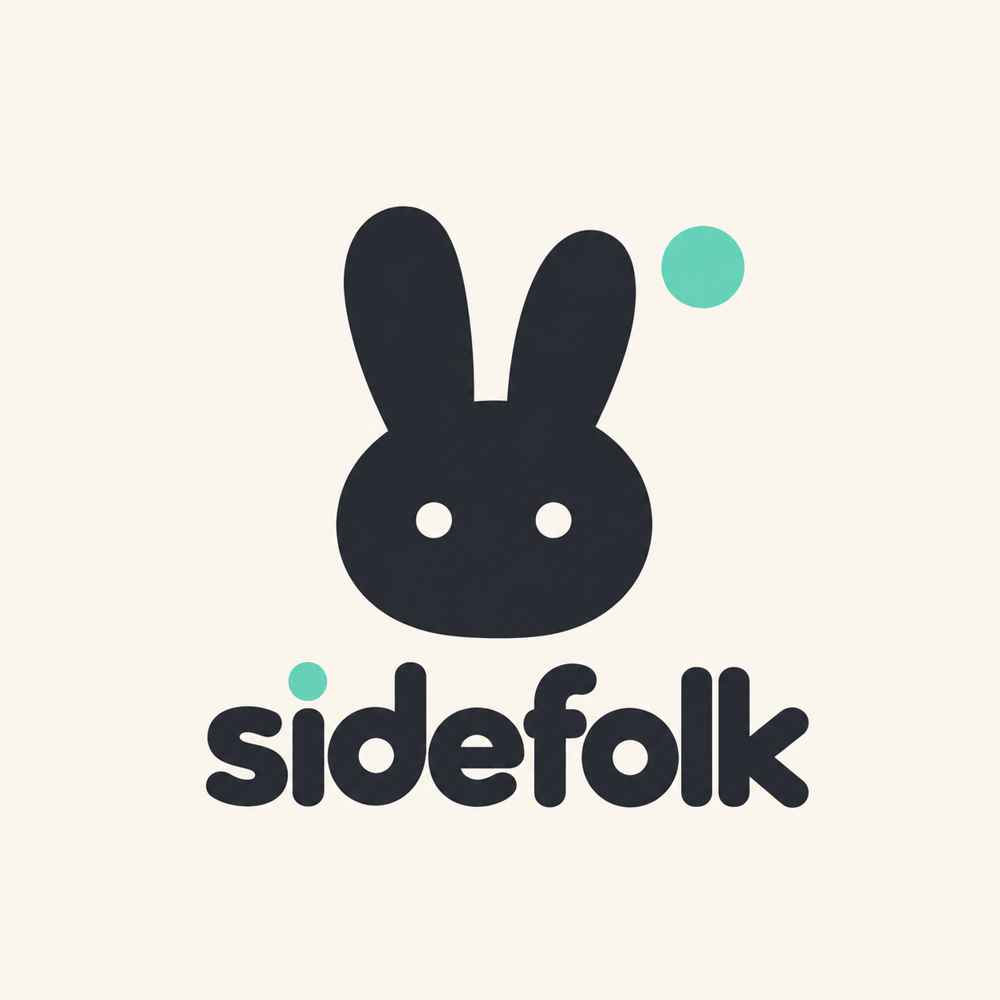
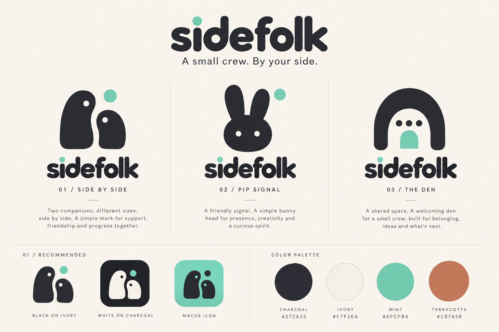
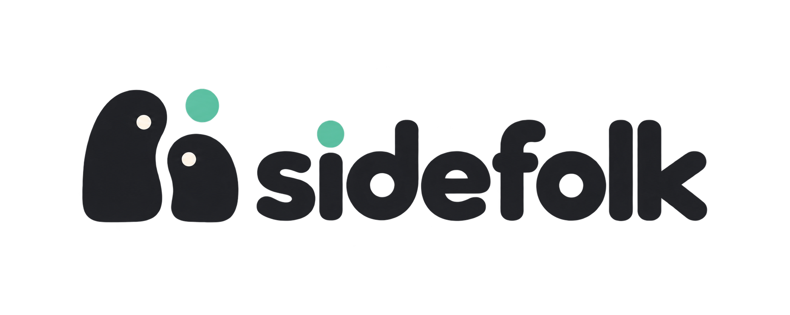
Download selected Pip Signal logo · Original selected reference
One interface for technical and nontechnical people. Plain-language summaries first, exact actions and deeper context when needed.
Open the clickable app prototype →
Explore setup, home, requests, crew, reminders and preferences. Sample data only; no tools connect and nothing is executed.
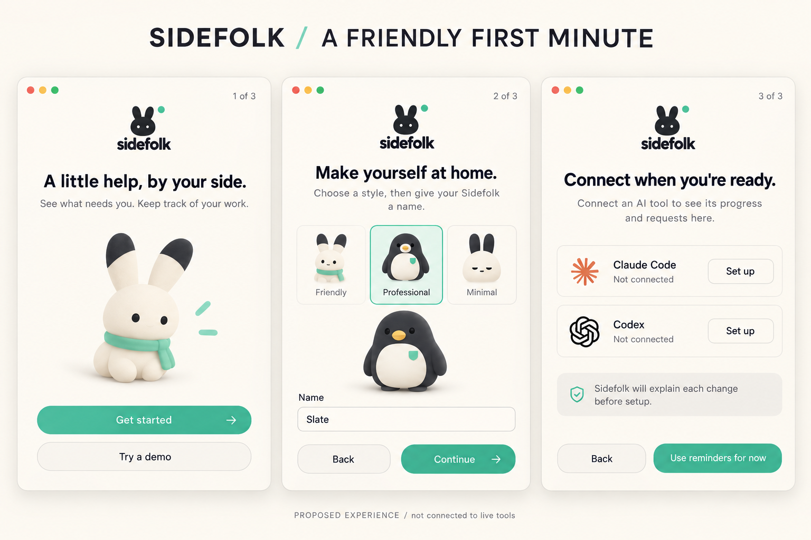
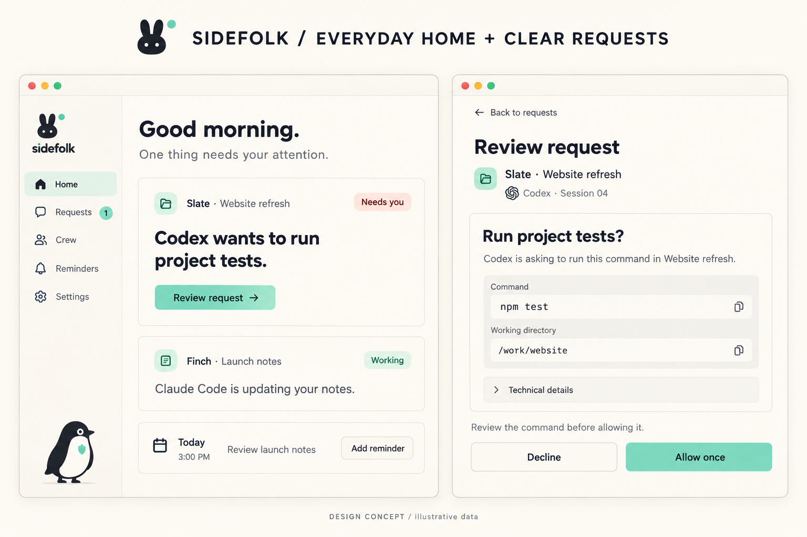
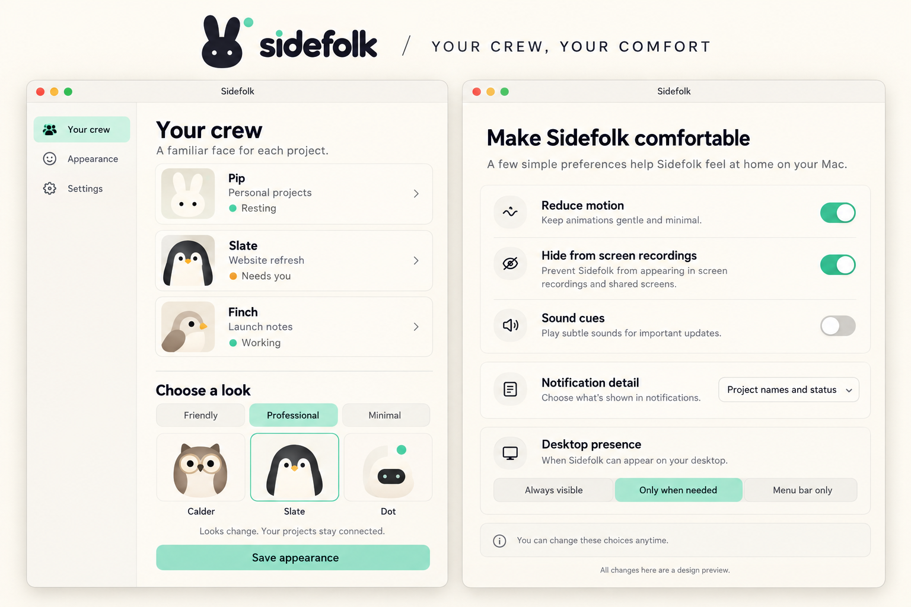
Read the full app UX specification · Version 2 generation prompts
Character-rich art around a disciplined interface. Project identity and explicit choices come first.
#F7F3EA#272A33#6FCFB4 #C87658 · illustration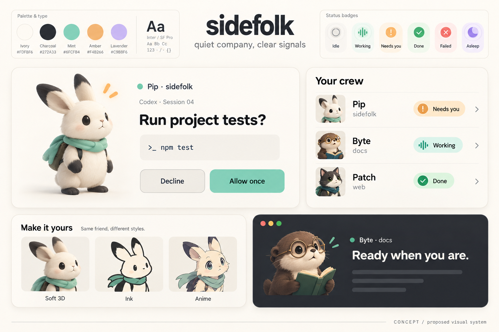
Every request identifies pet, project and agent/session. A coat color never decides where an approval goes.
Shared labels, signs and orbs across every art family. Keep reduced-motion poses and keyboard focus visible.
Short gestures that settle. A companion should make work easier to follow without competing for attention.
Art direction, exact prompts and practical production notes. All files live beside this lookbook.